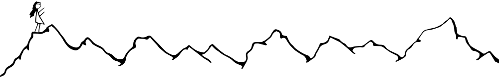
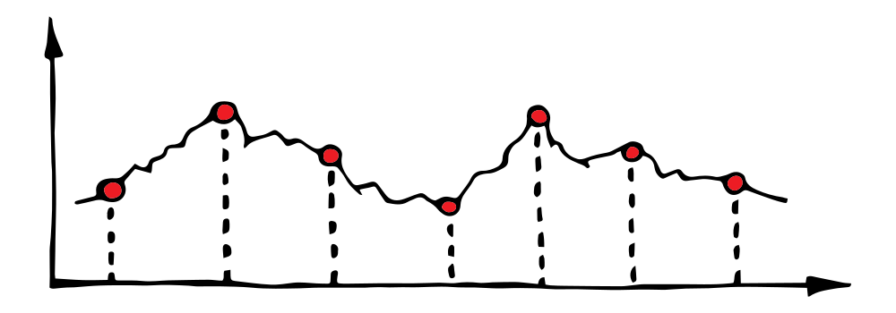
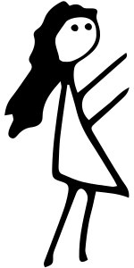
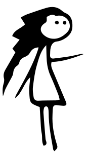
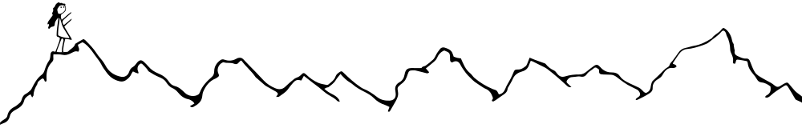
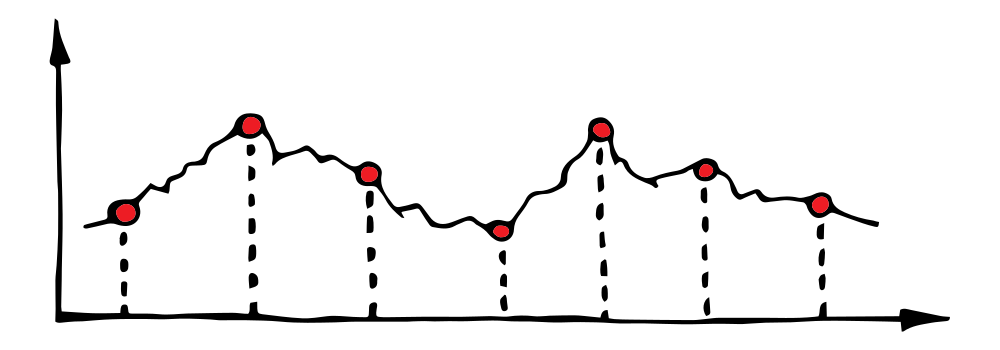
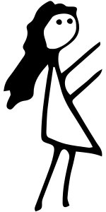
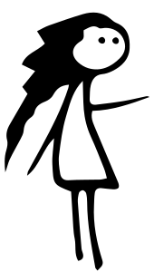
— Какое настроение было у тебя в понедельник?
— Среднее
— А во вторник?
— Чуть лучше
— А в среду?
— Хуже вторника, но лучше понедельника. Зачем ты спрашиваешь?
— Мне нужен набор данных, чтобы создать пики и спады горных хребтов.
— Зачем тебе горы?
— Чтобы отделять части повествования
— Я потеряла любовь :(
— Создай новую
— Спасибо за поддержку, но сейчас у меня нет настроения играться с кодом. Я потеряла настоящую любовь.
— В чём разница?
— Ты подкалываешь меня? Настоящая любовь это не объект с детерминированными примитивами. Любовь это сокровенное и волшебное чувство. Это постоянно меняющееся состояние зависимое от бесконечного количества условий и событий. Любовь это... я даже не могу сформулировать короткое и простое объяснение настоящей любви.
— Я не подкалываю. Сложное начинается с простых шагов.
— Добавить что-нибудь новое
— Обновить старое
— Даже к волшебному ведут простые шаги
— Я поняла тебя. Каждое действие приблизит к цели и так далее я создам настоящую любовь. Примерно, через четыре миллиарда лет. Мне грустно, потому что у меня уже была настолько дорогая любовь, и я её потеряла.
— Ты использовала любовь созданную кем-то другим?
— Да
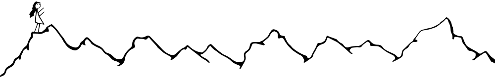
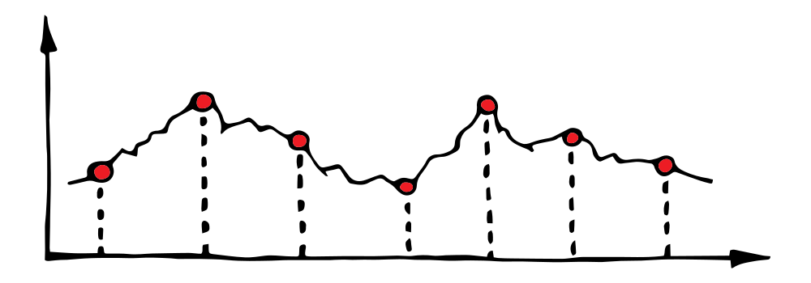
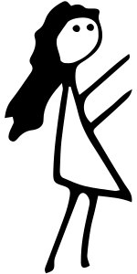
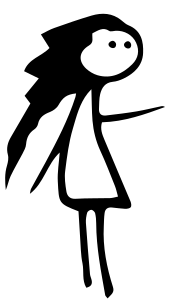